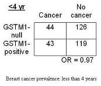
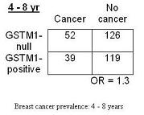
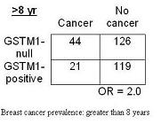
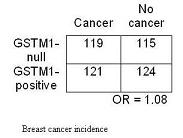

Example: Selection Bias - Breast Cancer
Lead Author(s): Jeff Martin, MD
Breast Cancer Study
This is an example of selection bias in a cross-sectional study.
Kelsey et al. (1997) asked Is glutathione S-transferase class mu deletion (GSTM1-null) polymorphism associated with increased risk of breast cancer?
Prevalent Cases
In the cross-sectional study, using prevalent breast cancer cases, the magnitude of the association depended upon the number of years since diagnosis of the breast cancer cases.
- In the Chi-square below, when limiting the analysis to breast cancer cases who had been diagnosed in the past 4 years, the odds ratio was 0.97, which is essentially 1.
- In other words, no evidence of an association.
Less than 4 yrs

4 - 8 yrs
When using breast cancer cases who had been diagnosed between 4 and 8 years ago, there was a hint of an association with an OR of 1.3 (seen in the Chi-square below).

Greater than 8 yrs
Interestingly, when using prevalent breast cancer cases who had been diagnosed 8 or more years ago, this really brought out an association with an odds ratio of 2.0 (in the Chi-square below).

Incident Cases
Similar to what was seen with the prevalent cases who were diagnosed less than 4 years ago, when the researchers used true incident cases (ie very recently diagnosed) they also saw no evidence of an association, odds ratio 1.08 (in the Chi-square below).
- Evidently, there is something about having this polymorphism that is associated with longer survival after a breast cancer diagnosis, but not with getting breast cancer per se.
- The authors speculated that it may be something to do with metabolism of the chemotherapy used to treat cancer.

This illustrates the very different conclusions you would draw in a cross-sectional study versus a study using incident cases, and this is all because of selection bias.
References
Kelsey, K. T., Hankinson, S. E., Colditz, G. A., Springer, K., Garcia-Closas, M., Spiegelman, D., et al. (1997). Glutathione S-transferase class mu deletion polymorphism and breast cancer: results from prevalent versus incident cases. Cancer Epidemiol Biomarkers Prev, 6 (7), 511-515.